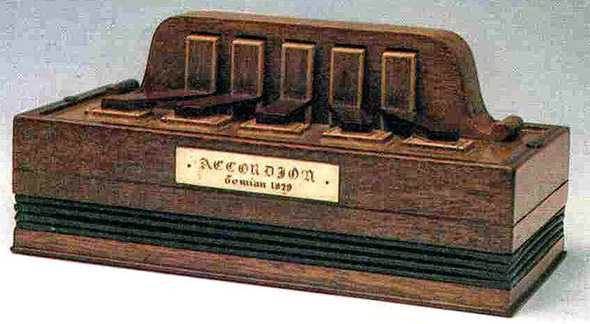

Кирилл Демиан (Cyrill Demian, 1779–1847) — известный австрийский музыкальный мастер армянского происхождения, работавший в Вене
вошел в историю как изобретатель аккордеона,
получив патент на инструмент под названием «Accordion» 23 мая 1829 года.
Демиан долгое время думал над тем, чтобы сделать собственный музыкальный инструмент.
Он составлял чертежи, делал расчеты, стремясь
создать усовершенствованный инструмент.
В этом ему помогали его сыновья - Карл и Гвидо.
Демиан решил назвать изобретение аккордеоном, поскольку яркой особенностью его было именно наличие аккордового звучания.
В основу изобретения легла эолина Фридриха Бушмана.
Аккордеон Демиана имел 7 клавиш для правой руки,
которые были расположены в один ряд (мелодия) и 2 клавиши для левой (аккомпанемент).
«Инструмент имеет форму маленькой коробочки, внутри которой между собой с помощью сильфона скреплены металлические пластинки.
Одной кнопкой можно воспроизводить несколько аккордов. Можно выполнять марши, арии, различные мелодии. Это может делать даже человек
с небольшой музыкальной практикой. Также его можно переносить с собой. Те, кто любят путешествовать, особо оценят этот инструмент»,
— говорил о своем изобретении Кирилл Демиан.
Аккордеон состоял из пяти клавиш, предназначенных только для левой руки. Каждой клавише соответствовал аккорд (не тон),
отчего и произошло название «аккордеон». На нем можно было исполнить простые мелодии в одной тональности.
Однако это не мешало любителям музыки приобретать его сначала в музыкальных лавках, а позже – на аккордеонных фабриках.
Демиан также создал основные элементы конструкции инструмента, которые сохранились до настоящего времени: корпус,
состоящий из правой и левой крышек с клавиатурами, и меховую камеру.
Он быстро стал популярен по всей Европе. В 1830-х годах он появился в Англии, в 1840-х стал популярен в Нью-Йорке.
А когда в XIX веке началась массовая эмиграция из Европы (только в период с 1815 по 1932 Европу покинуло 60 миллионов человек),
то аккордеон распространился по всему свету.
Аккордеон вобрал в себя черты нескольких музыкальных инструментов: по своей форме он напоминает баян,
по техническому устройству относится к гармони, клавишами же и способностью изменять регистр близок к фортепиано.